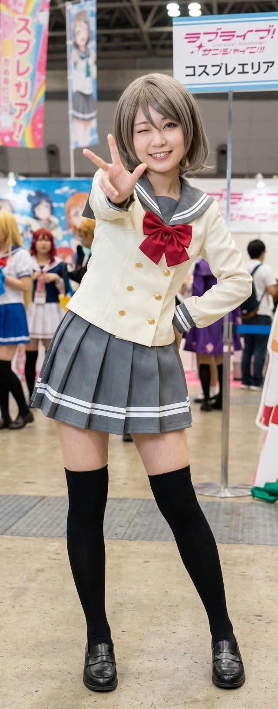

"전속 전진, 요소로!! ...아, 잠깐만. 치수 좀 마저 재고 갈게!" — 줄자를 목에 걸고 코스프레 의상을 만들며.
효빈예술대학교 의상학과에 재학 중인 대학생이자, 당가동 서브컬처 파티를 수호하는 이른바 'Aqours(아쿠아) 오시 어벤져스'의 든든한 수영 베테랑 겸 물리력 담당 멤버. 일본의 스쿨 아이돌 프로젝트 《러브 라이브! 선샤인!!》의 와타나베 요우를 숭배하는 진성 요우 오시다.
모든 스탯을 '체육'과 '제복 만들기'에 몰빵한 탓에 고등학교 시절 학업 성적은 썩 좋지 않았지만, 타고난 손재주와 열정 하나로 재수 끝에 효빈예술대학교 의상학과에 진학했다. 빼어난 미모와 원작 캐릭터를 완벽히 고증한 듯한 우월하고 글래머러스한 몸매를 자랑하며, 일상에서도 툭하면 "요소로!"를 외치는 제복 광신도다. 특유의 시원시원한 성격과 수영으로 다져진 압도적인 피지컬 덕분에 불의를 보면 절대 참지 않고 앞장서는 효빈시 서브컬처계의 듬직한 행동대장이다.
2. 와타나베 요우와의 완벽한 평행이론 (및 차이점)
2.1. 출생과 신체의 기적
태어난 곳이 무려 효빈광역시 탄성군 도변읍(渡辺邑)의 요우리(曜雨里)다. 주소 자체가 이미 '와타나베 요우' 그 자체다. 게다가 생일인 7월 14일은 요우의 생일(4월 17일)을 거울처럼 정확히 뒤집은 날짜다. 이쯤 되면 호적부터가 덕질을 위해 우주가 점지해 준 수준이다.
요우 특유의 쾌활하고 스포티한 외모, 그리고 글래머러스한 몸매까지 완벽하게 닮았다. 다만 밖에서는 렌즈를 끼고 다니지만, 집에 있을 때는 편안하게 동그란 안경을 쓰고 돌아다니는 갭 모에를 지니고 있다.
2.2. 취향과 재능 (수영과 제복)
수영 실력: 엄청난 수영 실력의 소유자로, 과거 수영부에 소속되어 지역 수영 대회에서 당당히 1등을 차지한 이력이 있다. (참고로 당시 2등은 송과영이었다.)
제복 매니아: 제복만 보면 눈이 돌아가 환장하는 성격마저 똑같다. 본인의 전공(의상학)을 200% 살려 친구들의 각종 제복 코스프레 의상을 현역 디자이너 뺨치는 퀄리티로 직접 만들어 입힌다.
바다 냄새: 아버지가 항해사는 아니지만 철도를 끄는 기관사이시며, 어머니가 시장에서 해산물 가게를 운영하셔서 도선요에게서는 항상 은은하고 짭조름한 바다 냄새가 난다고 한다.
2.3. 결정적 차이: 밥파, 그리고 웬수 같은 동생
요리를 매우 잘하며 햄버그 스테이크를 가장 좋아한다는 점은 같으나, 국수나 파스타 같은 '면 요리'에 특화된 요우와 달리 도선요는 볶음밥이나 덮밥 같은 '밥 요리'의 달인이라는 묘한 차이가 있다.
또한, 무남독녀 외동딸인 요우와 달리 도선요에게는 징그럽게 말을 안 듣는 여동생이 하나 있다. 이 여동생은 이리자의 남동생과 동갑내기인데, 선요와 리자는 만나기만 하면 서로의 동생을 안주 삼아 "확 그냥 쾌감펀치로 턱을 돌려버릴까 보다"라며 한탄하기 바쁘다.
이후 대학 입시를 준비하며 1년을 쉬고(재수) 효빈예술대학교 의상학과에 진학했다. 이 때문에 2003년생임에도 불구하고 2004년생 학생들과 함께 신입생 시절을 보냈는데, 마침 그곳에서 효빈종합고 후배였던 조향림을 다시 만나 사실상 학번 동기이자 절친한 언니 동생 사이로 학교생활을 함께하고 있다. 고등학교 시절 향림과 엠마 체레스떼의 끈끈한 관계를 잘 알고 있었기에, 셋이 모이면 고등학교 시절의 추억을 자주 안주 삼는다.
도변읍에는 바다가 없기 때문에, 바다가 보고 싶거나 바다 수영을 하고 싶을 때는 주로 4호선 도변역이나 천가역 라인을 타고 고해영의 고향인 고해읍이나 바로 아랫동네인 탄성읍 쪽 해수욕장으로 훌쩍 떠나곤 한다.
4. 2023년 임은혜 구출 작전과 리에라몰의 축복
4.1. "어이, 아줌마." - 일진의 망언과 어벤져스의 극대노
2023년 초, 혐덕 무리와 손절을 선언한 임은혜가 으슥한 골목에서 쓰레기 일진들에게 둘러싸여 협박을 당하는 사건이 발생했다. 일진 무리가 은혜에게 입에 담지 못할 성적 모욕을 퍼부으며 달려들려던 찰나, 근처를 지나던 안공주, 유리내, 백모모의 다급한 S.O.S를 받고 도선요가 포함된 'Aqours 오시 어벤져스 5인방'이 현장에 구세주처럼 등판했다.
선봉에 선 도선요와 그녀의 남자친구를 본 일진 남학생은 분위기 파악도 못 하고 선요의 우월한 몸매를 역겹게 훑어보며 씻을 수 없는 망언을 내뱉었다.
"어이, 아줌마. 몸 좋네? 나랑 한 번 하면 저 임은혜 년 곱게 풀어준다. 어때?"
이 한마디는 완벽한 역린을 건드렸다. 도선요의 눈빛이 싸늘하게 식기도 전에, 평소 얌전하고 곱상하던 선요의 남자친구가 개빡돌아 이성을 잃고 일진의 턱주가리를 박살 내버렸다. 이어 도선요 역시 수영으로 단련된 압도적인 코어 근력과 악력으로 일진들을 바닥에 패대기치며 골목길을 그야말로 초토화시켜버렸다. 이후 백모모의 어마어마한 팩폭 사자후가 이어지며 상황은 완벽하게 제압되었다.
4.2. 부모님의 피의 숙청과 자본주의 포상
이 끔찍한 사건을 전해 들은 리에라몰 점장 임세혁 부부는 눈물을 흘리며 분노했고, 대형 로펌을 선임해 일진 무리에게 형사 고소와 천문학적 민사 소송을 걸어 집안을 완전히 박살 내는 '피의 숙청'을 시전했다.
반면, 딸을 구해준 어벤져스에게는 눈물을 흘리며 리에라몰 100만 원 상품권, 평생 전 매장 VIP 30% 할인권, 초호화 한정판 굿즈 세트를 하사했다. 패션 전공이자 수영인, 그리고 요리사인 도선요에게 리에라몰 VIP 카드는 그야말로 치트키였다. 그녀는 이 카드를 알뜰하게 긁어가며 리에라몰에서 최고급 수영 도구, 주방 요리 도구, 그리고 코스프레 의상 제작용 고급 원단과 부자재를 쏠쏠하게 사 모으고 있다.
4.3. 구출 이후: 키와 체급 역전의 굴욕(?)
이 사건 이후 은혜 일당(임은혜, 안공주, 백모모)과는 든든한 동네 언니 동생 사이가 되었다. 재밌는 점은, 2023년 구출 당시만 해도 분명 선요가 은혜보다 키가 훨씬 컸는데, 그사이 폭풍 성장을 한 임은혜가 어느새 선요의 키는 물론이고, 선요가 내심 자부심을 가졌던 '흉부 사이즈'마저 압도적으로 추월해 버렸다는 것이다. (은혜의 비현실적인 89.9 스펙의 위엄). 만날 때마다 선요는 은혜를 위아래로 훑어보며 "너 대체 뭘 챙겨 먹고 위아래로 그렇게 폭풍 성장을 했냐?!"라며 억울해하는 것이 일상이 되었다. 은혜가 "선요 언니 큥~" 하며 와락 안겨올 때마다 압도적인 체급(?) 차이에 밀려 숨막혀 한다는 짠한 후문이 있다.
5. 대인 관계 (환장의 소꿉친구들)
고해영 (타카미 치카 포지션): 코흘리개 시절부터 흙 파먹으며 함께 자란 영혼의 소꿉친구 1호. 치카를 쏙 빼닮은 해영과 요우를 닮은 선요의 조합은 완벽한 원작 고증 그 자체다. 애니메이션처럼 아련하고 눈물겨운 우정 서사 따위는 없고, 만나면 서로 등짝을 스매싱하며 장난을 치는 전형적인 리얼 K-소꿉친구다. 해영이 특유의 엉뚱한 텐션으로 사고를 치거나 무모한 계획을 세우면, 선요가 어쩔 수 없다는 듯이 "전속 전진!"을 외치며 행동대장으로 합류해 수습(혹은 판을 더 키우는) 역할을 전담한다. 눈빛만 봐도 무슨 미친 짓을 할지 아는 사이.
이리자 (사쿠라우치 리코 포지션): 찐 소꿉친구 2호. 원작의 요우-치카-리코 삼각관계 설정 때문인지, 선요는 리자에게 장난 섞인 묘한 견제와 라이벌 의식을 불태우곤 한다. 물론 현실에서는 그런 치정극 따위는 1도 없고, 만나면 서로의 말 안 듣는 웬수 같은 동생들(둘 다 동갑이다)을 안주 삼아 "확 그냥 바다에 빠뜨려버릴까"라며 씹기 바쁜 현실 찐친이다. 간호사인 리자와 의상학도인 선요는 밤샘 작업의 고충을 누구보다 잘 이해하는 전우이기도 하다.
송과영 (마츠우라 카난 포지션): 동갑내기(2003년생) 근력 몬스터이자 소꿉친구 3호. 과거 수영 대회에서 선요가 1등, 과영이 2등을 차지하며 라이벌 기믹을 세웠다. 지금도 만나면 서로 근육량을 체크하거나 헬스장 루틴을 공유하며 묘한 피지컬 기싸움을 벌이곤 한다.
석다연 (쿠로사와 다이아 포지션): 소꿉친구 4호. 역시 동갑내기 친구로, 선요의 텐션이 폭주할 때 옆에서 팩폭 태클을 걸어주는 상식인 역할을 한다.
남자친구 (와타나베 츠키 실사판): 당가동 어벤져스 5인방 중 유일하게 사귀고 있는 남자친구. 애니메이션에 등장하는 요우의 사촌 '와타나베 츠키'를 쏙 빼닮은 매우 중성적이고 곱상한 외모를 지녔지만, 골목길 일진 참교육 사건에서 증명했듯 선요를 건드리면 눈이 돌아가는 엄청난 상남자다.
조향림 & 엠마 체레스떼: 고등학교 직속 후배들이자, 현재는 효빈예술대에서 같이 뒹구는 대학 동기(향림)/친구(엠마). 패션과 의상이라는 공통점이 있어 죽이 매우 잘 맞는다.
6. 여담 및 일화

[도선요의 와타나베 요우 코스프레]
자신의 전공을 살려 한 땀 한 땀 직접 제작한 완벽한 퀄리티의 제복 코스프레. 특유의 시원한 미소까지 요우 그 자체다.
6.1. 철벽의 제복녀와 근육
근육 철벽 방어: 글래머러스한 몸매와 예쁜 얼굴 탓에 대학 캠퍼스나 길거리에서 번호를 따이는 일이 비일비재하다. 남자친구가 있다고 해도 끈질기게 들이대는 진상들이 많은데, 그럴 때마다 셔츠 소매를 걷어 수영으로 다져진 우람한 이두박근을 뽝! 하고 보여주거나, 가방에서 꺼낸 기관사 제복 모자를 푹 눌러쓰고 광기 어린 눈빛으로 "전속 전진! 요소로!!"를 외치면 십중팔구 겁을 먹고 질색하며 도망간다고 한다.
재봉틀의 마술사: 옷을 만드는 속도와 퀄리티가 현역 디자이너 뺨치는 수준이다. 서브컬처 파티가 열릴 때마다 친구들의 체형에 딱 맞는 코스프레 의상(특히 제복류)을 밤을 새워 찍어내는 공장장 역할을 톡톡히 하고 있다. 리에라몰 VIP 카드 혜택의 가장 큰 수혜자이기도 하다.
시력의 비밀: 밖에 나갈 때는 완벽한 풀세팅과 렌즈를 장착하지만, 집에 돌아오면 츄리닝 차림에 도수 높은 동그란 뺑뺑이 안경을 쓴 건어물녀로 변신한다. 이 모습을 본 은혜가 "언니 뉘신지...?"라며 못 알아본 적이 있다.
7. 각주
수영으로 다져진 엄청난 폐활량과 전신 근력 덕분에 웬만한 성인 남성도 도선요의 멱살잡이 한 번에 나가떨어진다. [이동]